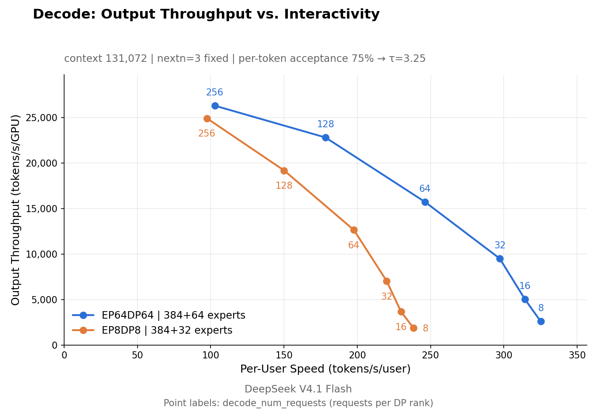

模型定义了「可能性」的边界；而以合理的成本将这些能力服务于海量用户，是推理框架必须解决的核心问题。
A model defines the boundary of what is possible; serving those capabilities to a massive user base at a reasonable cost is the core problem an inference framework has to solve.
在大规模 AI 需求的驱动下，推理框架已从单机服务程序演化为跨集群协同的复杂系统。算子（kernel）、通信、调度与缓存管理相互交织，共同决定端到端性能。对于大规模在线服务，性能优化必须立足于具体的部署条件：使用哪些芯片、硬件如何组织、计算如何分布、以及先前的计算结果如何被复用。
Under large-scale AI demand, inference frameworks have evolved from single-machine serving programs into complex systems coordinated across clusters. Kernels, communication, scheduling, and cache management interact with one another and jointly determine end-to-end performance. For a large-scale online service, performance optimization has to be grounded in concrete deployment conditions: which chips are used, how the hardware is organized, how computation is distributed, and how previously computed results are reused.
- Support accelerators from multiple vendors: run on different hardware platforms and make full use of each platform's performance.
- Organize prefill and decode around commodity hardware: ordinary 8-GPU machines for prefill, ordinary 64–128-GPU supernodes for decode, with computation, communication, and scheduling designed around the load characteristics of the two stages.
- Retain KV cache for more than 72 hours: provide a longer window for context reuse, cutting repeated prefill computation on a cache hit, while accounting for the capacity and management overhead that long retention requires.
- o
- l
围绕这些目标，我们持续优化计算、通信、调度与存储，在满足延迟要求的同时提升系统的有效吞吐——用更少的计算与能耗服务更多请求，让智能服务以更低的价格触达更多用户。
Around these goals we continuously optimize computation, communication, scheduling, and storage to raise the system's effective throughput while meeting latency requirements — serving more requests with less compute and energy, so that intelligent services reach more users at a lower price.
我们此前已开源 TileLang 及一系列推理算子库。今天，我们开源 DeepInfer——面向大规模云服务的推理框架。 它为 DeepSeek V4.1 Flash 背后高吞吐、低延迟的大规模推理服务提供支撑。单个集群当前每天服务 155 万亿 token，按谷价计算整体收入为每 GPU 小时 38 美元。
We have previously open-sourced TileLang and a series of inference kernel libraries. Today we are open-sourcing DeepInfer, our inference framework for large-scale cloud services. It powers the high-throughput, low-latency large-scale inference service behind DeepSeek V4.1 Flash. A single cluster currently serves 155 trillion tokens per day, with overall revenue of US$38 per GPU-hour (at valley pricing).
DeepInfer 将高性能算子与深度优化的推理引擎相结合，支持分布式推理、投机解码、SWA 有界重放、结构化输出等，并可运行于 NVIDIA 与华为昇腾平台。与此同时，我们开源 deepseek-recipe——一个生产级的 token 编解码组件，可在主流 LLM API 协议与模型 token 序列之间高效、准确地相互转换。其处理逻辑与官方 DeepSeek API 完全对齐，因此第三方部署可获得与官方一致的行为。未来 DeepSeek 模型的推理代码，以及后续的性能工作，都将继续在 DeepInfer 中开源。
DeepInfer combines high-performance kernels with a deeply optimized inference engine. It supports distributed inference, speculative decoding, SWA bounded replay, structured outputs, and more, and runs on both NVIDIA and Huawei Ascend platforms. Alongside it we are open-sourcing deepseek-recipe, a production-grade token encoding and decoding component that converts efficiently and accurately between mainstream LLM API protocols and model token sequences. Its processing logic is fully aligned with the official DeepSeek API, so third-party deployments get the same API behavior as the official one. Inference code for future DeepSeek models, along with subsequent performance work, will continue to be open-sourced in DeepInfer.
推理系统的 KV 缓存管理与负载均衡组件与我们的内部基础设施紧密耦合，因此这部分代码尚未完全开源。我们发布的知乎博客文章从上述设计目标出发，描述了 DeepSeek V4.1 Flash 推理系统的整体架构与关键实现，包括这两个组件的设计。本问答基于该博客文章，并将持续更新以回答更详细的问题，帮助开发者与组织提升 DeepSeek V4.1 Flash 推理部署的效率。
The KV cache management and load balancing components of the inference system are tightly coupled to our internal infrastructure, so that code is not yet fully open-sourced. Our published Zhihu blog post starts from the design goals above and describes the overall architecture and key implementation of the DeepSeek V4.1 Flash inference system, including the design of those two components. This Q&A builds on that blog post and will be updated continuously to answer more detailed questions, helping developers and organizations improve the efficiency of DeepSeek V4.1 Flash inference deployments.
Inference system overview推理系统概览
DeepSeek V4.1 Flash 推理系统的优化目标是更高的吞吐与更低的延迟。
The optimization goals of the DeepSeek V4.1 Flash inference system are higher throughput and lower latency.
- Expert parallelism (EP) for the MoE part within a (super)node: increases batch size and GPU matrix-multiplication efficiency, and therefore throughput.
- Disaggregated Vision Encoder / Prefill / Decode deployment: decouples resource allocation per stage, so TTFT and TBT can be controlled and optimized independently.
- u
- l
与 DeepSeek-V3 / R1 推理系统 类似，注意力使用数据并行（#DP = #EP）。DP / EP 副本必须做负载均衡，为此我们构建了 预填充负载均衡器、解码负载均衡器、视觉编码器负载均衡器与专家并行负载均衡器。为避免为重复的预填充买单，我们构建了 KVCache 存储。
As in the DeepSeek-V3 / R1 inference system, attention uses data parallelism (#DP = #EP). The DP / EP replicas have to be load-balanced, for which we built a Prefill Load Balancer, Decode Load Balancer, Vision Encoder Load Balancer, and Expert-Parallel Load Balancer. To avoid paying for repeated prefill, we built KVCache Storage.
请求在进出时需要在 API 协议与 token 序列之间转换。DeepSeek Recipe 高效、准确地处理这种编解码；通过在特殊 token 处切分并并行编码各段，它既防止特殊 token 注入，又降低了长输入的 token 化延迟。
Requests have to be converted between API protocols and token sequences on the way in and out. DeepSeek Recipe handles this encoding and decoding efficiently and accurately; by segmenting on special tokens and encoding the segments in parallel, it prevents special-token injection while reducing tokenization latency for long inputs.
参考架构：
Reference architecture:

Q: 推理系统的整体形态是怎样的？
EPD 分离式架构，外加专门的存储节点。
问：What is the overall shape of the inference system?
A disaggregated E/P/D architecture plus dedicated storage nodes.
Q: 使用了哪些并行方式？
- 预填充：EP2–8 / DP2–8；使用 HBM 允许的最小 EP/DP。
- 解码：EP64–128 / DP64–128（宽 EP）；使用可用 GPU 允许的最大 EP/DP。
- 视觉编码器（VE）：每个实例通常一块 GPU 即可，建议使用更便宜的 GPU。
- 目前不使用 TP 与 CP。
问：What parallelism is used?
- Prefill: EP2–8 / DP2–8; use the smallest EP/DP that HBM allows.
- Decode: EP64–128 / DP64–128 (Wide-EP); use the largest EP/DP that the available GPUs allow.
- VE: a single GPU per instance is generally enough, and cheaper GPUs are recommended.
- TP and CP are not used for now.
Q: 宽 EP 为解码带来什么收益？
宽 EP 显著降低 MoE 专家部分每步的内存流量，在良好的 EPLB 支持下有效提升 TPS（每秒 token 数）。下图展示 EP8 与 EP64 的基准数据（离线基准脚本，配置如图）。
问：What does Wide-EP buy for decode?
Wide-EP substantially reduces per-step memory traffic in the MoE expert part and, with good EPLB support, effectively raises TPS. The chart below shows EP8 vs. EP64 benchmark data (offline benchmark script, configuration as shown).

Q: 多模态如何部署？
EPD 分离，视觉编码器部署在单块 GPU 上。
问：How is multimodal deployed?
EPD disaggregation, with the vision encoder deployed on a single GPU.
Q: 最小的部署单元需要多大？
1P + 1D 即可部署。实践中 P 与 D 的 GPU 比例约为 1:1。由于推荐的解码配置为 EP64 及以上，最小的「高效」部署单元是 64 块预填充 GPU 加 64 块解码 GPU。
问：How large does the smallest deployment unit have to be?
1P + 1D is deployable. In practice the GPU ratio between P and D is roughly 1:1. Since the recommended decode configuration is EP64 or above, the smallest efficient deployment unit is 64 GPUs of prefill plus 64 GPUs of decode.
Cluster & storage集群与存储
Q: 能否跨数据中心部署？
由于 V4.1 Flash 大幅压缩了 KV 缓存，将 P 与 D 拆分到不同数据中心在技术上是可行的（但会付出一定的可靠性代价，例如数据中心之间的光纤容易被施工挖断）。预算上，每 8 块 GPU 约需 400 Gbps 互联带宽。实践中，DeepSeek 的推理节点部署在不同但相邻的数据中心。
问：Can it be deployed across data centers?
Because V4.1 Flash compresses the KV cache substantially, splitting P and D across data centers is technically feasible (at some cost in reliability, e.g., the fiber running between data centers is easily severed by construction work). Budget roughly 400 Gbps of interconnect bandwidth per 8 GPUs. In practice, DeepSeek's inference nodes are deployed in different but adjacent data centers.
Q: 标准存储服务器配置是怎样的？
我们建议每台 KV 缓存存储服务器配置 20 块 30.73 TB SSD，每台服务器至少提供 40 GB/s 读、5 GB/s 写吞吐，以及足以保留 24 小时数据的容量。存储服务器数量随推理部署的实际规模横向扩展。
问：What is the standard storage server configuration?
We recommend 20 × 30.73 TB SSDs per KV cache storage server, with each server providing at least 40 GB/s read and 5 GB/s write throughput and enough total capacity to retain 24 hours of data. Scale out the number of storage servers with the actual size of the inference deployment.
Q: 存储集群与在线 GPU 的比例是多少？
实践中，按逻辑容量计约每 GPU 14.4 TB；所需物理容量更大。
问：What is the ratio of the storage cluster to online GPUs?
In practice, about 14.4 TB per GPU measured as logical size; the physical capacity required is larger than that.
Q: 3FS 分布式文件系统有什么特点？
- 在面对节点故障与网络抖动时，必须同时提供高可用与高性能。
- 数据以 10+2 纠删码存储在 3FS 上；每个 EC 组可容忍两个节点同时故障。
- 一次读取会同时向组内全部 11 个存储节点发起请求；任意 10 个响应即足以解码并返回。
- 一个 GC Worker 组件回收过期缓存：每个存储节点部署一个实例，按 LRU 策略周期性驱逐最近最少使用的 KV 缓存，使磁盘用量保持在水位线以下。
问：What are the characteristics of the 3FS distributed file system?
- It has to deliver both high availability and high performance in the face of node failures and network jitter.
- Data is stored on 3FS with 10+2 erasure coding; each EC group tolerates two simultaneous node failures.
- A read issues requests to all 11 storage nodes in the group simultaneously; any 10 responses are enough to decode and return.
- A GC Worker component reclaims expired cache: one instance is deployed per storage node and periodically evicts the least recently used KV cache under an LRU policy, keeping disk usage below a watermark.
Expert-parallel load balancing专家并行负载均衡
Q: 预填充的 EPLB 策略是什么？
- 机制：除自身负责的专家外，每块 GPU 还持有若干冗余专家，托管热点专家的副本。收集每个专家最近 N 步的负载，每 M 步依据这些统计将专家重新分配到 GPU；专家权重在组内通过 NVLink
symm_mem打乱。 - 预填充设置：初始每块 GPU 4 个冗余专家（向上取整，使专家总数为
ep_size的整数倍），100 步统计窗口，每 1000 步重新分配一次。实测moe_lb（最慢 rank / 均值）= 1.074（EP4DP4）/ 1.045（EP2DP2）。
问：What is the EPLB strategy for prefill?
- Mechanism: beyond the experts it is responsible for, each GPU holds a few redundant experts that host replicas of hot experts. The load of each expert over the last N steps is collected, and every M steps experts are re-assigned to GPUs based on those statistics; expert weights are shuffled within the group over NVLink
symm_mem. - Prefill settings: start from 4 redundant experts per GPU (rounded up so that the total expert count is a multiple of
ep_size), a 100-step statistics window, and a re-assignment every 1,000 steps. Measuredmoe_lb(slowest rank / mean) = 1.074 (EP4DP4) / 1.045 (EP2DP2).
Q: 解码的 EPLB 策略是什么？
机制与预填充相同。设置：初始每块 GPU 1 个冗余专家（向上取整，使专家总数为 ep_size 的整数倍）——例如 EP64 下取整后每块 GPU 7 个专家（不含共享专家）；1000 步统计窗口，每 10000 步重新分配一次。实测 moe_lb = 1.090。
问：What is the EPLB strategy for decode?
Same mechanism as prefill. Settings: start from 1 redundant expert per GPU (rounded up so that the total expert count is a multiple of ep_size) — at EP64, for example, this works out to 7 experts per GPU after rounding, excluding the shared expert; a 1,000-step statistics window and a re-assignment every 10,000 steps. Measured moe_lb = 1.090.
Data-parallel load balancing数据并行负载均衡
Q: 预填充负载均衡器如何实现？
- 分桶（层级）：请求按总上下文长度分为 4 档——<16K / 16–64K / 64–256K / ≥256K。分配给各档的引擎数量，依据该档在上轮算力配额需求中的占比动态再分配；每档有各自的逐批算力配额上限。
- 跨 DP 组：引擎根据自身剩余算力配额拉取任务。由于任何引擎都能命中任何前缀，因此没有前缀亲和路由。
- DP 组内：一批请求交给一个引擎，每个到达的请求进入当前配额负载最低的 DP rank。
- 单 GPU 内：请求 FIFO 出队，chunk 大小不固定，由预算求解。每个预填充步给定一个时间预算（
compute_quota_limit，纳秒），拟合的二次代价模型cost(q, c)预测该步耗时（q= 序列 token 数，c= 该序列已计算的前缀长度）。调度器对该二次方程求解q，取在 32768 token 预算内、且恰好耗尽剩余时间预算的最大q。该预算本身还会在 DP 组内通过 all-reduce MIN 进一步缩小。
问：How is the Prefill Load Balancer implemented?
- Bucketing (tiers): requests are bucketed by total context length into 4 tiers — <16K / 16–64K / 64–256K / ≥256K. The number of engines assigned to each tier is redistributed dynamically according to that tier's share of compute-quota demand in the previous round, and each tier has its own per-batch compute-quota cap.
- Across DP groups: engines pull work according to their remaining compute quota. Since any engine can hit any prefix, there is no prefix-affinity routing.
- Within a DP group: a batch of requests is handed to an engine, and each request as it arrives goes to the DP rank with the lowest current quota load.
- Within a single GPU: requests are dequeued FIFO, and the chunk size is not fixed but solved from a budget. Each prefill step is given a time budget (
compute_quota_limit, in nanoseconds), and a fitted quadratic cost modelcost(q, c)predicts how long the step will take (q= number of sequence tokens,c= the prefix length already computed for that sequence). The scheduler solves that quadratic forq, taking the largestqthat stays within the 32,768-token budget while exactly consuming the remaining time budget. The budget itself is further reduced by an all-reduce MIN within the DP group.
Q: 解码负载均衡器如何实现？
解码负载均衡器在所有解码实例的全部 GPU 间均匀路由。其原则是同时平衡两个维度：请求数（决定每步批大小）与 KV 缓存总长度（决定注意力部分的开销）。启发式地，它将短请求发往并发低但 KV 缓存总长度大的 GPU，将长请求发往 KV 缓存总长度小的 GPU。详见 DualPath 的组内调度算法。
问：How is the Decode Load Balancer implemented?
The Decode Load Balancer routes uniformly across all GPUs of all decode instances. The principle is to balance two dimensions at once: request count, which determines the per-step batch size, and total KV cache length, which determines the cost of the attention part. Heuristically, it sends short requests to GPUs with low concurrency but large total KV cache length, and long requests to GPUs with small total KV cache length. See DualPath's intra-group scheduling algorithm for details.
Q: 视觉编码器负载均衡器如何实现？
图像以机器为粒度路由：一台预填充机器随机选取一台「每块 GPU 托管一个视觉编码器」的机器，在该机器上图像被交给当前正在处理最少图像块（patch）的 GPU——patch 数由尺寸直接算得 (width/patch_size) × (height/patch_size)——由其生成嵌入。
问：How is the Vision Encoder Load Balancer implemented?
Images are routed at machine granularity: a prefill machine picks at random one machine that hosts one vision encoder per GPU, and on that machine the image is handed to the GPU currently processing the fewest image patches — computed directly from the dimensions as (width/patch_size) × (height/patch_size) — which generates the embedding.
Q: 负载均衡整体提升了多少？
可与离线基准对比：我们达到了近乎完美均衡的离线基准约 80% 的水平。
问：How much does load balancing improve things overall?
It can be compared against the offline benchmark: we reach roughly 80% of a perfectly balanced offline benchmark.
KV cache storageKV 缓存存储
| 内容 Content | 介质 Medium | 副本 Replication | 管理方 Managed by |
|---|---|---|---|
| 在途块 KV 缓存 + 状态 KV 缓存 | 推理 GPU 显存 | — | 预填充 / 解码实例 |
| SWA KV 缓存 | 本地主机内存 | 单副本；3FS 上无内容 | 预填充 / 解码实例；跨机命中经 400G VLAN 拉取 |
| 分页块 KV 缓存 | 专用 3FS 存储集群 | 无应用层副本；依赖 3FS 自身冗余 | kvcache-store |
Block KV cache块 KV 缓存
Q: 存储介质是什么？
如上表所示，块 KV 缓存（主 KV + 索引器 K）存储在专用 3FS 存储集群上，而非本地主机内存。与分层存储系统相比，专用存储集群让每台预填充机器都能命中任意前缀，避免了前缀亲和与负载均衡路由策略之间的冲突；它还将存储节点的自动扩缩容与计算节点解耦，并使 KV 缓存不受计算节点故障影响（计算节点的故障率比存储节点高一个数量级以上）。
问：What is the storage medium?
As shown in the table above, the block KV cache (main KV + indexer K) is stored on a dedicated 3FS storage cluster, not in local host memory. Compared with a tiered storage system, a dedicated storage cluster lets every prefill machine hit any prefix, avoiding a conflict between prefix affinity and the load-balancing routing policy. It also decouples autoscaling of storage nodes from compute nodes and keeps the KV cache unaffected by compute-node failures (compute nodes fail at a rate more than an order of magnitude higher than storage nodes).
Q: 预填充是否使用分页 KV 缓存？
是，预填充侧同样使用分页 KV 缓存。
问：Does prefill use a paged KV cache?
Yes, the prefill side also uses a paged KV cache.
Q: 解码阶段是否启用 KV 卸载？
否。解码不受缓存容量限制，因此也未使用 Hi-Sparse。解码阶段产生的 KV 缓存仍写入磁盘，以提升缓存命中率。
问：Is KV offload enabled during decode?
No. Decode is not bound by cache capacity, so Hi-Sparse is not used either. The KV cache produced during decode is still written to disk, in order to improve the cache hit rate.
Q: 过期与 TTL？
kvcache-store 侧没有过期逻辑，回收完全由 3FS 自身的 GC 负责。3FS 分布式文件系统为 KV 缓存提供约 100 PiB 的 SSD 存储，其中 agent 流量的 TTL（存活时间）为 3 天，聊天机器人流量为 7 天。聊天机器人流量的长尾命中重得多——少量 KV 缓存被读取极多次，因此丢失它对整体命中率的代价明显更高。经验上，约 3 天的 TTL 会让聊天机器人流量损失 0.5%–1% 的 KV 缓存命中率。
问：Expiry and TTL?
There is no expiry logic on the kvcache-store side; reclamation happens entirely in 3FS's own GC. The 3FS distributed file system provides roughly 100 PiB of SSD storage for the KV cache, with a TTL (time-to-live) of 3 days for agent traffic and 7 days for chatbot traffic. Chatbot traffic has a much heavier long tail of hits — a small amount of KV cache is read very many times, so losing it costs noticeably more overall hit rate. Empirically, a TTL of around 3 days costs chatbot traffic 0.5%–1% of KV cache hit rate.
Q: 缓存相关开销如何被掩盖（重叠掉）？
匹配（Matching） 由入口（Entrypoint）以 CHECK 角色对本地 kvcache-store 执行，仅对元数据做哈希链前缀匹配；但命中长度必须在路由前算出，因此无法隐藏。取回 KV（Fetching KV） 在独立进程中异步进行，将 KV 缓存从 3FS 搬入主机共享内存。换入（Swap-in） 从共享内存到 HBM，在引擎进程内的线程中运行，目标是将逐层 H2D（主机到设备）传输与前向计算重叠。由于 CUDA 拷贝引擎在 KV 缓存块的细粒度拷贝上表现不佳，换入用 GDR 实现：RDMA 网卡在不占用 SM 的情况下打满 PCIe 带宽。
问：How is the cache-related overhead overlapped away?
Matching is done by the Entrypoint against the local kvcache-store in the CHECK role, as a hash-chain prefix match over metadata only; but the hit length has to be computed before routing, so it cannot be hidden. Fetching KV happens asynchronously in a separate process, moving the KV cache from 3FS into host shared memory. Swap-in from shared memory to HBM runs in a thread inside the engine process, with the goal of overlapping per-layer H2D (host-to-device) transfers with forward computation. Because the CUDA copy engine performs poorly on the fine-grained copies of KV cache blocks, swap-in is implemented with GDR: an RDMA NIC saturates PCIe bandwidth without consuming SMs.
SWA KV cacheSWA KV 缓存
Q: 它如何存储？
- SWA KV 缓存不进入分页 KV 块；它位于状态缓存（state cache）中，每条序列占用一个固定大小的槽位（
StateBlock）。每个槽位按「是否需要存储」分为两个区域：[存储区：SWA] [丢弃区：YOCO 消费方 SWA]。存储区是必须跨请求持久化的 SWA 窗口；丢弃区保存 YOCO 消费方 SWA 层（其恢复依赖预填充重计算）以及 C2 压缩边界累加器ca_state/ica_state（压缩窗口边界天然对齐到 128 token 存储粒度的整数倍，因此没有跨边界依赖）。在 V4.1 中，存储的层是前 20 层。 - SWA KV 缓存只在「128 token 整数倍」的位置存储。预填充阶段之后：存储位置通过「在序列末尾预留 1 个 token 并向下取整到 128 的倍数」得到；若余下不足一个完整的 128 token 单元，本轮不存储。分块预填充中途不存储——只有最后一个块存储。解码阶段，在设备内存中分配一个独立的副本区；每次请求跨越 128 token 边界时，将当前窗口在设备上拷贝进副本区。请求结束时，存储取自副本区中最近一次完成的拷贝，挂载点向下取整到 128 边界。拷贝位置最多可越过边界 5 个 token，由槽位环形缓冲区超出窗口的 6 个额外位置吸收。
问：How is it stored?
- The SWA KV cache does not go into paged KV blocks; it lives in the state cache, where each sequence occupies one fixed-size slot (
StateBlock). Each slot is split into two regions by whether it needs to be stored:[stored region: SWA] [dropped region: YOCO consumer SWA]. The stored region is the SWA window that has to persist across requests. The dropped region holds the YOCO consumer SWA layers (whose recovery relies on prefill recomputation) and the C2 compression boundary accumulatorsca_state/ica_state(compression window boundaries are naturally aligned to multiples of the 128-token store granularity, so there is no cross-boundary dependency). For V4.1, the stored layers are the first 20. - The SWA KV cache is only stored at positions that are multiples of 128 tokens. After the prefill stage: the store position is obtained by reserving one token at the end of the sequence and rounding down to a multiple of 128; if that leaves less than one full 128-token unit, nothing is stored this round. Nothing is stored part-way through a chunked prefill — only the last chunk stores. During the decode stage, a separate replica region is allocated in device memory; every time the request crosses a 128-token boundary, its current window is copied into the replica region on-device. When the request finishes, the store is taken from the most recently completed copy in the replica region, with the attachment point rounded down to a 128 boundary. The copy position can overshoot the boundary by at most 5 tokens, which is absorbed by the 6 extra positions the slot's ring buffer has beyond the window.
Q: 存储了什么，存在哪里？
每序列只有 state_size_to_disk = 20 层 × 134 token × 528 B = 1,415,040 B 进入存储。528 B/token 是 MXFP8 格式的 SWA KV。SWA KV 缓存不进入持久化缓存，而是留存在产生它的那台机器的内存中。一个内存目录——逻辑上统一、但物理上按 key 在入口机器间分区——记录它由哪台机器持有；命中时，本地没有的机器从远端拉取。
问：What is stored, and where?
Only state_size_to_disk = 20 layers × 134 tokens × 528 B = 1,415,040 B per sequence goes into the store. The 528 B/token is the MXFP8 SWA KV format. The SWA KV cache does not enter the persistent cache; it stays in the memory of the machine that produced it. An in-memory directory — logically unified, but physically partitioned by key across the Entrypoint machines — records which machine holds it, and on a hit, a machine that does not have it locally fetches it from the remote one.
Q: 它如何从预填充传到解码？
SWA KV 缓存与块 KV 缓存共用同一条 P 到 D 的传输路径。
问：How is it transferred from prefill to decode?
The SWA KV cache and the block KV cache share the same P-to-D transfer path.
Q: 是否支持跨机命中？
跨机命中依赖入口（Entrypoint）的内存目录，配合 400G VLAN 回拉。
问：Are cross-machine hits supported?
Cross-machine hits rely on the Entrypoint in-memory directory together with a 400G VLAN pull-back.
KV cache hits and recomputationKV 缓存命中与重计算
Q: 重计算如何进行？
- SWA 有界重放只重计算最近 128 个 token，并将注意力窗口截断到重放段之内：从位置 s 重放时，位置 i 的 query 只与 max(s, i−127) 到 i 范围内的 key 计算，从而得到近似的 SWA KV 缓存。重计算代价因而降为常数，与上下文长度和层数无关。该机制用于两处：
- 编码器 SWA 有界重放：前缀缓存命中长度现在只取决于块 KV 缓存。当 SWA KV 缓存缺失时，命中前缀的最后 128 个 token 被重计算，并与未缓存的后缀一起前向运行；重放段只重建 SWA KV 缓存，块 KV 缓存原样复用，既不重算也不覆盖。
- 解码器 SWA 有界重放：预填充计算只发生在编码器层。在 CED 架构中，解码器层的块 KV 缓存由编码器最后一层的隐状态投影得到，因此每层只需计算解码器 SWA KV 缓存；要精确重建它，需将最后 2560 个 token 跑过 20 个解码器层。取而代之，每次预填充只在解码器层重计算 prompt 的最后 128 个 token，结果仅用于解码、绝不进入前缀缓存——使总预填充计算近乎减半。
问：How is recomputation done?
- SWA bounded replay recomputes only the most recent 128 tokens and truncates the attention window to within the replayed segment: replaying from position s, the query at position i is computed only against keys in the range max(s, i−127) to i, which yields an approximate SWA KV cache. The cost of recomputation is thereby reduced to a constant, independent of context length and layer count. The mechanism is used in two places:
- Encoder SWA bounded replay: the prefix cache hit length now depends only on the block KV cache. When the SWA KV cache is missing, the last 128 tokens of the hit prefix are recomputed and run forward together with the non-cached suffix; the replayed segment only rebuilds the SWA KV cache, while the block KV cache is reused as-is, neither recomputed nor overwritten.
- Decoder SWA bounded replay: prefill computation happens only in the encoder layers. In the CED architecture the decoder layers' block KV cache is projected from the last encoder layer's hidden state, so only the decoder SWA KV cache has to be computed per layer; reconstructing it exactly would require running the last 2,560 tokens through 20 decoder layers. Instead, each prefill recomputes only the last 128 tokens of the prompt in the decoder layers, and the result is used for decode only and never enters the prefix cache — nearly halving total prefill computation.
Q: 命中策略是什么？
原则是：命中长度由块 KV 缓存决定，而最后一块是否需要重计算由 SWA KV 缓存决定——若 SWA KV 缓存缺失，则回退一个块并重计算。具体而言，在 YOCO 截断要求下，长度为 L 的输入的最大命中长度至多为 L − 134（128 token 窗口 + 6 个 token 的投机式回退）。在该上限内，先查询块 KV 缓存，得到命中长度 L1（128 token 块大小的整数倍），再查询 SWA KV 缓存。若在 L1 − 128 到 L1 范围内存在 SWA KV 缓存，命中长度即为 L1；否则为 L1 − 128，其中 128 为重计算窗口。
问：What is the hit policy?
The principle is: the hit length is determined by the block KV cache, and whether the last block needs recomputation is determined by the SWA KV cache — if the SWA KV cache misses, back off by one block and recompute. Concretely, under the YOCO truncation requirement, the maximum hit length for an input of length L is at most L − 134 (128-token window + 6 tokens of speculative backtracking). Under that cap, the block KV cache is queried first, giving a hit length L1 (a multiple of the 128-token block size), and then the SWA KV cache is queried. If an SWA KV cache exists in the range L1 − 128 to L1, the hit length is L1; otherwise it is L1 − 128, where 128 is the recomputation window.
Autoscaling & fault tolerance自动扩缩容与容错
Q: 自动扩缩容如何实现？
- 预填充依据未缓存 token 数决定所需机器数；解码依据运行中请求数调整。调整是限流的，且有上下界。
- 为解决长尾请求在大型 EP 部署中造成的资源浪费，解码引擎（CE）在收到关停通知后进入宽限期（1 分钟）；任何尚未完成的请求及其 KV 缓存会被一次性转发给其他 CE 继续解码。
问：How is autoscaling implemented?
- Prefill determines the number of machines it needs from the number of non-cached tokens; decode adjusts based on the number of running requests. Adjustments are rate-limited and bounded above and below.
- To address the resource waste that long-tail requests cause in large-EP deployments, a decode engine (CE) enters a grace period (1 min) after receiving a shutdown notice; any requests still unfinished, along with their KV cache, are forwarded in one shot to other CEs to continue decoding.
Q: 冗余配额是怎样的？
部署保留冗余配额以吸收流量波动的冲击，有两种形式：池中待命、空置的就绪机器作为扩容库存；以及始终保持比计算需求更多的实例在线——具体而言，只要配额利用率高于 0.8 就禁止缩容。
问：What does the redundant quota look like?
Deployments keep a redundant quota to absorb the impact of traffic swings, in two forms: ready machines held unoccupied in the pool as scale-out inventory, and always keeping more instances online than the computed demand — concretely, scale-in is forbidden whenever quota utilization is above 0.8.
Q: 重启需要多久？
重启在分钟量级。容错来自 PE（预填充引擎）/ CE 配额冗余加上请求级重路由，而非靠缩短单个引擎的重启时间。
问：How long does a restart take?
Restarts are on the order of minutes. Fault tolerance comes from PE (prefill engine) / CE quota redundancy plus request-level rerouting, rather than from shortening the restart time of a single engine.
Q: EP 故障转移策略是什么？
在大型 EP 部署中，一个实例的全部 GPU 构成一个通信域，因此单块 GPU 故障就会使整个实例不可用。重启时，为使实例剩余的 healthy GPU 继续服务，平台从当前所有 healthy GPU 重新确定 EP 大小，实例以实际收到的 GPU 数作为其 EP 大小。
问：What is the EP failover strategy?
In a large-EP deployment, all GPUs of an instance form a single communication domain, so a single failed GPU makes the whole instance unusable. On restart, in order to keep the instance's remaining healthy GPUs in service, the platform re-determines the EP size from all currently healthy GPUs, and the instance takes the number of GPUs it actually receives as its EP size.
Low-precision computation低精度计算
Q: FP4 用在哪些地方？
- 主 KV：每 16，e4m3——类似 NVFP4，但没有全局 scale。
- 索引器 KV：每 32，ue8m0，MXFP4。
- MoE 路由专家权重：每 32，ue8m0，MXFP4。
问：Where is FP4 used?
- Main KV: per-16, e4m3 — like NVFP4 but without the global scale.
- Indexer KV: per-32, ue8m0, MXFP4.
- MoE routed-expert weights: per-32, ue8m0, MXFP4.
Kernel implementation算子实现
Q: 使用了哪些算子（算子后端）？
用本仓库的 examples/benchmark.py 脚本做性能分析，可获得包含算子使用信息的对应 trace。
问：Which kernels (kernel backends) are used?
Profile with the examples/benchmark.py script in this repository to obtain the corresponding trace, which contains the kernel usage information.
Q: 何时使用 Mega MoE？
Mega MoE 是扩展域内（scale-up domain）的通用方案：无论 EP 大小或批大小，Mega MoE 都明显快于未融合的 MoE。
问：When is Mega MoE used?
Mega MoE is the general solution within a scale-up domain: regardless of EP size or batch size, Mega MoE is significantly faster than unfused MoE.
Q: DeepGEMM / FlashMLA 等算子库是否有更好的内部版本？
- 大体相同；索引器与 mega 系列有些差异。FlashMLA 缺少一处手工调优的 SASS 优化，使解码算子慢 5%–10%。
- 端到端性能接近——最多相差 5%。
问：Are there better internal versions of kernel libraries such as DeepGEMM / FlashMLA?
- They are broadly the same; the indexer and mega series differ somewhat. FlashMLA lacks one hand-tuned SASS optimization, which makes the decoding kernel 5%–10% slower.
- End-to-end performance is close — at most 5% apart.
Speculative decoding投机解码
Q: 如何实现？
在推理系统层面，DSpark 使用变长验证。由于草稿 token 的接受概率随请求与位置变化，定长验证会在低概率 token 上浪费验证算力。DSpark 用置信度头（Confidence Head）预测每个草稿 token 的接受率，在调度时把验证算力分配给边际回报最高的 token。生产中，草稿模型一次生成 5 个 token；基于实测的硬件吞吐曲线与逐请求、逐草稿 token 的接受率，草稿 token 按期望接受率排序，并选出使有效吞吐最大化的前缀子集进行验证。
问：How is it implemented?
At the inference system level, DSpark uses variable-length verification. Because the acceptance probability of a draft token varies across requests and positions, fixed-length verification wastes verification compute on low-probability tokens. DSpark predicts the acceptance rate of each draft token with a Confidence Head and, when scheduling, allocates verification compute to the tokens with the highest marginal return. In production, the draft model generates 5 tokens at a time; based on a profiled hardware throughput curve and the per-request, per-draft-token acceptance rates, the draft tokens are sorted by expected acceptance rate and the prefix subset that maximizes effective throughput is selected for verification.
Q: 动态长度验证相比固定 5 个能提升多少吞吐？
动态长度验证将每步验证的草稿 token 数削减约 30%（5.00 → 3.2–4.4），同时平均接受长度基本不变（3.29 vs 3.20）。根据 EP64/DP64 基准数据推算，在生产工作点（每 rank 约 60 条并发序列）可带来 +4–7% 的吞吐提升。
问：How much throughput does dynamic-length verification gain over fixed-5?
Dynamic-length verification cuts the number of draft tokens verified per step by about 30% (5.00 → 3.2–4.4) while leaving the average accepted length essentially unchanged (3.29 vs. 3.20). Computed from EP64/DP64 benchmark data, that works out to +4–7% throughput at the production operating point (~60 concurrent sequences per rank).
| 并发（序列/rank） conc (seqs/rank) | 固定-5 平均验证长度 fixed-5 avg verified length | 动态长度平均验证长度 dynamic-length avg verified length | 固定-5 接受长度 fixed-5 accepted length | 动态长度接受长度 dynamic-length accepted length | 固定-5 估算吞吐（tok/s/rank） fixed-5 estimated throughput (tok/s/rank) | 动态长度估算吞吐（tok/s/rank） dynamic-length estimated throughput (tok/s/rank) | 动态相对固定-5 增益 dynamic vs. fixed-5 gain |
|---|---|---|---|---|---|---|---|
| 16 | 5 | 4.44 | 3.32 | 3.24 | 4891 | 4816 | −1.5% |
| 32 | 5 | 3.65 | 3.25 | 3.17 | 8964 | 9111 | +1.6% |
| 48 | 5 | 3.94 | 3.3 | 3.26 | 12032 | 12467 | +3.6% |
| 60 | 5 | 3.58 | 3.3 | 3.21 | 13730 | 14466 | +5.4% |
| 72 | 5 | 3.24 | 3.29 | 3.12 | 14962 | 15961 | +6.7% |
| 96 | 5 | 3.24 | 3.3 | 3.15 | 16817 | 18660 | +11.0% |
Q: 草稿模型是否有更好的内部版本？
内部版本稍新一些，但性能差异很小。
问：Is there a better internal version of the draft model?
The internal one is somewhat newer, but the performance difference is small.
Q: 它与异步调度如何配合？
当 schedule(N+1) 运行时，第 N 步的置信度尚未返回，因此 CPU 调度只确定总预算；逐请求长度由 TileLang 算子（累积乘积、top-k 全局排序，融合重映射 scatter）在 GPU 上重算，结果写回 pinned buffer。
问：How does it interact with asynchronous scheduling?
When schedule(N+1) runs, the confidence from step N has not been returned yet, so CPU scheduling only fixes the total budget; the per-request lengths are recomputed on the GPU by a TileLang kernel (cumulative product, global sort for top-k, with a fused remap scatter), and the result is written back to a pinned buffer.
Asynchronous scheduling (zero-overhead batch scheduler)异步调度（零开销批调度器）
Q: 优化的是什么？
解码第 N 步运行 schedule(N) → forward(N) → sample(N) → post-process(N)，其中 schedule 与 post-process 是纯 CPU 逻辑，在 post-process(N) 之前需要一次 GPU-CPU 同步以获取 sample(N) 的结果。结果是 GPU 在 post-process(N) 与 schedule(N+1) 期间空闲。异步调度的目标就是消除这段空闲。
问：What is being optimized?
Decode step N runs schedule(N) → forward(N) → sample(N) → post-process(N), where schedule and post-process are pure CPU logic, and a GPU-CPU synchronization is needed before post-process(N) to obtain the result of sample(N). As a result, the GPU sits idle during post-process(N) and schedule(N+1). The goal of asynchronous scheduling is to remove that idle period.
Q: 如何实现？
沿用现有实现（SGLang、NanoFlow），通过在 GPU 与 CPU 之间异步调度来重叠流水线：当 GPU 运行 forward(N) → sample(N) 时，CPU 并发运行 schedule(N+1) → launch_forward(N+1) → post-process(N−1) → launch_sample(N+1)，使 GPU 全程无空闲。
问：How is it implemented?
Following existing implementations (SGLang, NanoFlow), the pipeline is overlapped by scheduling asynchronously between GPU and CPU: while the GPU runs forward(N) → sample(N), the CPU concurrently runs schedule(N+1) → launch_forward(N+1) → post-process(N−1) → launch_sample(N+1), leaving the GPU with no idle time throughout.
Structured outputs结构化输出
Q: 什么是结构化输出？
结构化输出（SO）将模型输出约束为严格符合指定格式（JSON schema、正则表达式、EBNF 等）。
问：What is structured output?
Structured output (SO) constrains model output to strictly conform to a specified format (JSON schema, regular expression, EBNF, and so on).
Q: 工作流是怎样的？
- 编译与推理解耦：SO 编译异步进行，请求在进入引擎前先取回编译结果。
- 编译阶段（在专用 SO 机器上）：将格式约束编译为文法自动机。
- 运行时：每个解码步推进自动机，确定合法 token 集合，生成掩码并施加到采样逻辑，强制输出符合目标结构。
问：What is the workflow?
- Compilation and inference are decoupled: SO compilation runs asynchronously, and a request retrieves the compiled result before it enters the engine.
- Compilation stage (on a dedicated SO machine): the format constraint is compiled into a grammar automaton.
- Runtime: at each decode step, the automaton is advanced, the set of legal tokens is determined, and a mask is generated and applied to the sampling logic, forcing the output to conform to the target structure.
DeepSeek RecipeDeepSeek Recipe
Q: 多协议 API 支持如何实现？
- DeepSeek Recipe 将来自 Chat Completions API、Responses API 与 Messages API 的请求转换为统一的对话格式，共用一套模型模板与编码逻辑，为给定模型版本生成 prompt 与 token 序列。
- 模型输出被解析为事件——正文、推理内容、工具调用等——再转换为各协议的流式响应。请求转换、prompt 编码与输出解析均用 Rust 实现以保证高效处理，并提供 Python 绑定以便使用。
问：How is multi-protocol API support implemented?
- DeepSeek Recipe converts requests from the Chat Completions API, the Responses API, and the Messages API into a single conversation format, sharing one set of model templates and encoding logic to generate the prompt and token sequence for a given model version.
- Model output is parsed into events — body text, reasoning content, tool calls, and so on — and then converted into each protocol's streaming response. Request conversion, prompt encoding, and output parsing are all implemented in Rust for efficient processing, with Python bindings for ease of use.
Q: token 化及其加速如何处理？
- 输入编码：构建 prompt 时，显式插入的特殊 token 及其位置被记录下来，因此编码将它们直接映射到对应 token ID，而普通文本用基础词表编码。出现在用户输入、工具结果或工具调用参数中的
<｜User｜>、<｜image｜>等字符串，被编码为对应的普通 token 序列，防止文本注入会影响模型行为的控制 token。 - 输出解析：处理响应 token 流时，我们通过 token ID 识别推理结束标记
</think>与 DSML 标签中的｜DSML｜特殊 token。模型用普通 token 拼出的相同文本被正确保留为字面内容，不会获得触发推理结束或工具调用的能力。 - 分段加速：构建 prompt 时，特殊 token 的位置与边界已知。鉴于 BPE 分词器的工作方式，特殊 token 之间的普通文本段可以独立编码。因此我们跳过普通文本内部的特殊 token 匹配与切分，并行编码各段，并按原顺序拼接结果。这减少了超长上下文请求的 token 化时间，改善了请求延迟。
问：How are tokenization and its acceleration handled?
- Input encoding: when building the prompt, the explicitly inserted special tokens and their positions are recorded, so encoding maps them directly to the corresponding token IDs, while ordinary text is encoded with the base vocabulary. Strings such as
<｜User｜>and<｜image｜>appearing in user input, tool results, or tool-call arguments are encoded as the corresponding ordinary token sequences, preventing text from injecting control tokens that would influence model behavior. - Output parsing: when processing the response token stream, we identify the end-of-reasoning marker
</think>and the｜DSML｜special token in DSML tags by token ID. The same text spelled out by the model using ordinary tokens is correctly preserved as literal content and does not gain the ability to trigger end-of-reasoning or a tool call. - Segmented acceleration: when the prompt is built, the positions and boundaries of special tokens are already known. Given how BPE tokenizers work, the ordinary-text segments between special tokens can be encoded independently. We therefore skip matching and splitting special tokens inside ordinary text, encode the segments in parallel, and concatenate the results in the original order. This reduces tokenization time for very long context requests and improves request latency.
Q: 流式输出如何解析？
- 推理后端以 token 粒度返回分块，因此单个 UTF-8 字符、DSML 标签或工具参数可能被拆到多个分块中。流式解析需要一个保留进行中状态、并及时返回已确定内容的状态机，以降低响应延迟。
- 跨块解析：解码遇到不完整的 UTF-8 字符时，相关 token 被缓冲，直到后续 token 将其补全，才交给解析器。解析器在推理、正文与工具参数各阶段之间维护状态，并对分隔标记使用增量 KMP 匹配。若一个分块在标记中途结束，匹配进度被保留，待下一分块到达后继续识别；已确定的内容随解析推进即时发出，无需重复扫描前文。
- 工具参数转换：工具名一旦解析完成即可返回，随后直接从 DSML 参数边界生成 JSON 片段。字符串值逐段做 JSON 转义，而数组、对象等非字符串值以其原始 JSON 文本发出，无需构造完整的参数对象，也无需重复解析与序列化。即便对于长参数，片段也能在生成时即刻返回，缩短了首个参数片段的等待时间。
问：How is streaming output parsed?
- The inference backend returns chunks at token granularity, so a single UTF-8 character, a DSML tag, or a tool argument may be split across several chunks. Streaming parsing requires a state machine that preserves in-progress state and returns already-determined content promptly, in order to reduce response latency.
- Cross-chunk parsing: when decoding encounters an incomplete UTF-8 character, the relevant tokens are buffered until later tokens complete it, and only then handed to the parser. The parser maintains state across the reasoning, body, and tool-argument phases, and uses incremental KMP matching for delimiter markers. If a chunk ends part-way through a marker, the match progress is retained and recognition continues when the next chunk arrives; determined content is emitted as parsing progresses, with no need to repeatedly rescan earlier text.
- Tool-argument conversion: the tool name can be returned as soon as it has been parsed, after which JSON fragments are generated directly from the DSML argument boundaries. String values are JSON-escaped segment by segment, while non-string values such as arrays and objects are emitted as their original JSON text, with no need to construct a complete argument object and no repeated parsing and serialization. Even for long arguments, fragments can be returned as they are generated, shortening the wait for the first argument fragment.